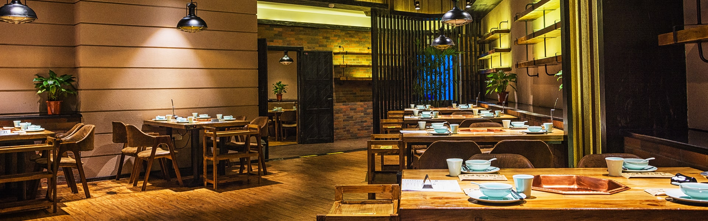

Running a successful restaurant is an intricate balancing act, requiring careful attention to various factors such as quality food, exceptional service, and a welcoming ambiance. However, unforeseen events like natural disasters, accidents, or other unexpected incidents can disrupt the smooth functioning of a restaurant, leading to financial losses and potential closure. This is where business interruption insurance comes into play, providing vital protection to restaurants in times of crisis. In this article, we will delve into the significance of business interruption insurance for restaurants, exploring its key features and benefits.
Business interruption insurance, also known as business income insurance, is a type of coverage designed to compensate businesses for lost income and additional expenses incurred due to a covered event. For restaurants, this insurance specifically addresses the financial impact of an interruption in operations caused by events like fires, floods, equipment breakdowns, or even widespread pandemics.
One of the primary benefits of business interruption insurance is the coverage it provides for lost income during the period of interruption. This can include the revenue lost due to closure, reduced seating capacity, or relocation to a temporary site. The insurance policy may also cover additional expenses necessary to minimize the financial impact, such as rent for an alternative location, payroll for essential staff, or the cost of advertising to regain customer trust.
While the immediate aftermath of a disruptive event can be financially challenging, the long-term consequences can often be even more daunting. Extended business interruption coverage can offer a lifeline to restaurants by providing compensation for income loss beyond the initial restoration period. This can be particularly crucial for restaurants facing prolonged closures or those struggling to recover in the aftermath of a disaster.
In an interconnected business landscape, restaurants often rely on suppliers, vendors, or distribution networks to sustain their operations. When these crucial links in the supply chain are disrupted due to an unforeseen event, it can have a cascading effect on the restaurant's ability to function. Contingent business interruption coverage protects restaurants by compensating for income loss resulting from disruptions at the premises of suppliers, vendors, or key partners.
By investing in business interruption insurance, restaurant owners can take proactive measures to mitigate risks and ensure business continuity in the face of adversity. Conducting a comprehensive risk assessment and working closely with insurance professionals can help tailor coverage to specific needs, allowing restaurant owners to focus on their core operations with greater peace of mind.
Business interruption insurance serves as a crucial safety net for restaurants, offering protection against financial fallout from unexpected events that disrupt normal business operations. With coverage for lost income, additional expenses, and extended interruption periods, this insurance provides the necessary support to navigate challenging times and recover effectively. By safeguarding their profits with business interruption insurance, restaurant owners can confidently continue serving their communities and thriving in an ever-changing industry.